Machine Learning on Git: Hercules and his Labours
Vadim Markovtsev
source{d}
Line burndown
git blame foo.go
●2014
func foo() {
println("bar")
}
●2015func foo() {
println("bar")
}
func qux() {
println("baz")
}
●2016func foo() {
println("waldo")
}
const X = 10
func spam() {
println("baz")
}
Line burndown
 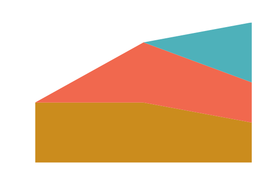
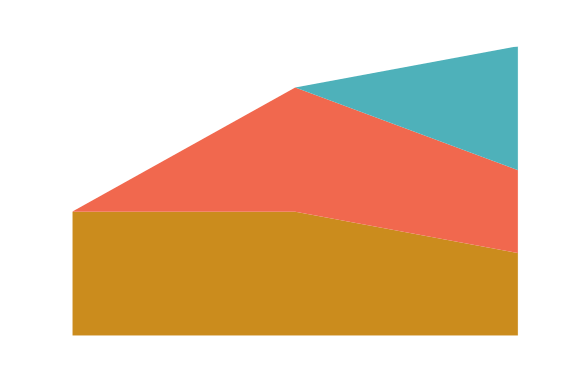
Story
- "git-of-theseus"
by Erik Bernhardsson
- I decided to build the similar tool using
go-git
- This project was named Hercules
Problems
- Correctness
- Performance
- Abstraction
Diff route
"How to blame" by Alberto Cortes.
- Trace the commits chain backwards starting from HEAD.
<root> D < E < F < G < H < I HEAD
- Diff starting from the root along the path from (1).
<root> D > E > F > G > H > I HEAD
Diff route
Where are my branches?
A---B---C
/ \
D---E---F---G---H---I HEAD
----------> time
way <----------
Git branches are pointers, and the history is lost.
Merges are ordered.
Diff route
Which way to go?
A---B---C topic
/ \
D---E---F---G---H---I master
----------> time
way <----------
Blaming using both branches is hard and sometimes even impossible.
Diff route
There can be "octopus" merges.
A---B---C topic1
/ \
D---E---F---G---H---I master
\ /
J---K topic2
Diff route
There can be multiple roots.
A---B---C subproject1
\
D---E---F---G---H---I master
/
J---K subproject2
Diff route
 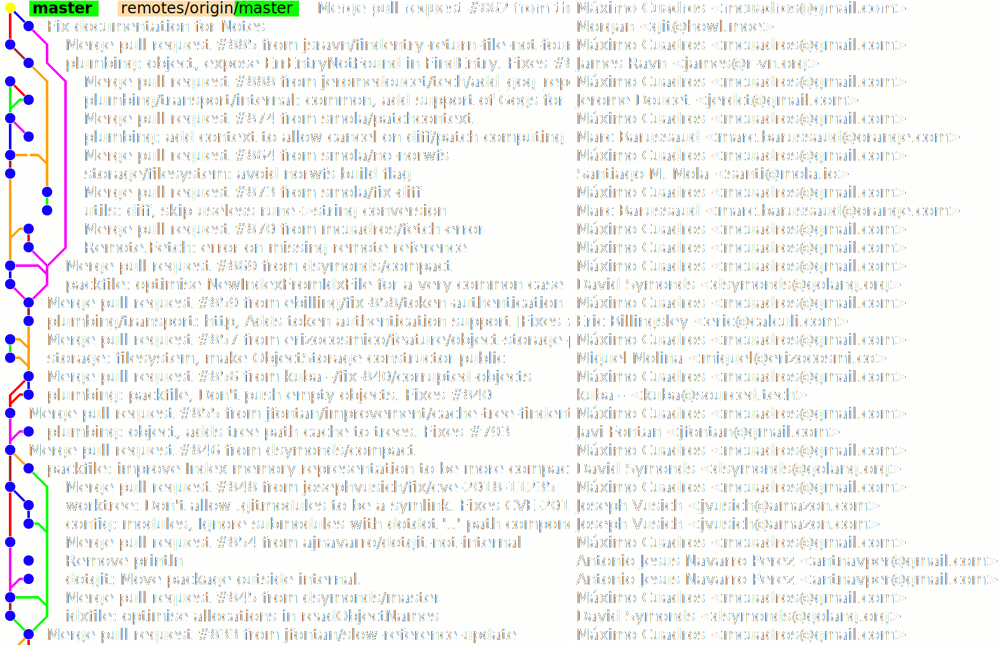
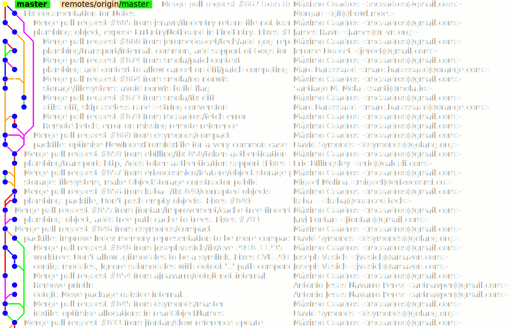
Diff route: --first-parent
 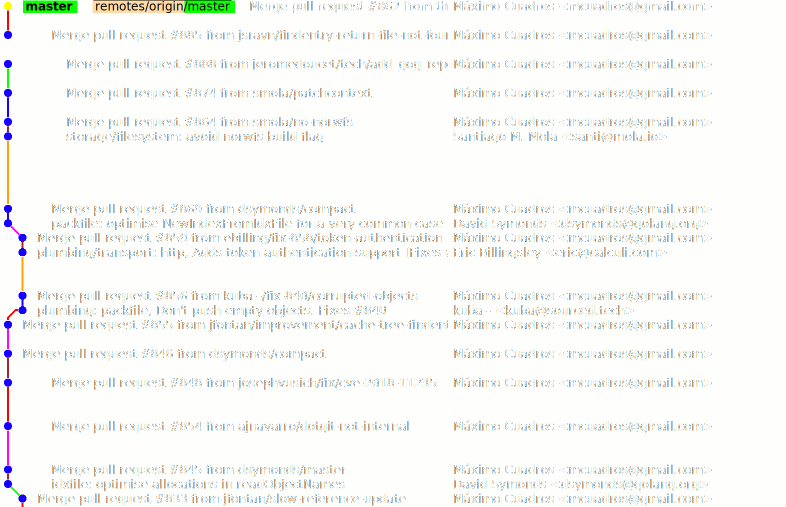
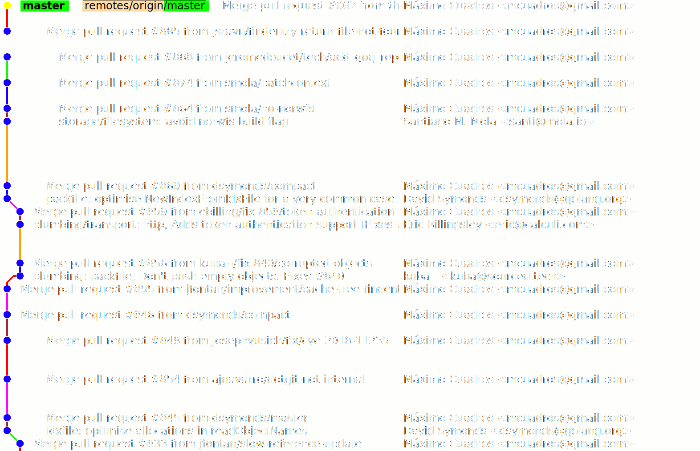
How to blame?
git checkout <commit> && git blame <file>
takes O(n) steps where n is the number of commits before
<commit>.
Thus naïve burndown takes O(n2).
We can reduce it to O(n) using the incremental algorithm!
How to blame?
Incremental blame is not possible using libgit2, jgit and cgit API.

Tree difference

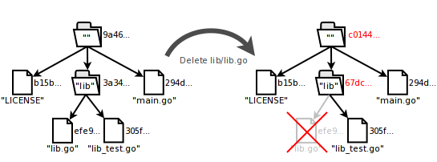
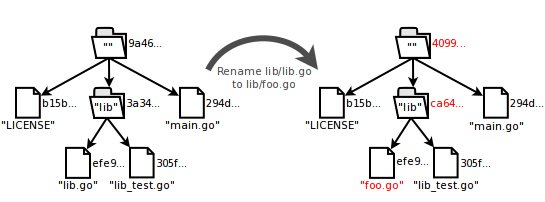
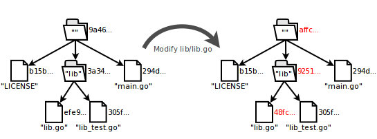
Git ≈ AI on Bitcoin in the cloud!!!
Fuzzy renames
git log -M=50%
Fuzzy renames
For each inserted file:
- Sort deleted files by size
- Take window, size depends on M
- byte-level diff to window
- Greedy choice of the nearest if fits M
- + Same file name hacks
- + Other crazy hacks in CGit
Diff
- Myers - most popular
- Patience - heuristics for better readability
- Histogram - used in jgit
Myers algorithm is enough for our analytics.
Line intervals
func foo() {
println("waldo")
}
const X = 10
func spam() {
println("baz")
}
Line intervals
func foo() {
println("waldo")
}
const X = 10
func spam() {
println("baz")
}
Line intervals
- Linked list
- O(file size) edit's location
- O(1) update
- Balanced binary tree
- O(log (file size)) edit's location
- O(file size) update
Low level performance
- Caching objects in go-git
git log- Memory consumption
Profile
FileDiff 0.503959
TreeDiff 0.457430
Burndown 0.033033
RenameAnalysis 0.003440
BlobCache 0.002025
DaysSinceStart 0.000064
IdentityDetector 0.000051
Profile
flat% sum% cum%
8.82% 8.82% 17.13% runtime.scanobject
6.05% 14.86% 26.95% runtime.mallocgc
5.79% 20.65% 5.79% runtime.heapBitsSetType
5.54% 26.20% 5.54% runtime.heapBitsForObject
4.53% 30.73% 4.53% runtime.memclrNoHeapPointers
2.77% 33.50% 2.77% runtime.memmove
2.27% 35.77% 2.27% runtime.greyobject
2.27% 38.04% 2.27% runtime.nextFreeFast
2.02% 40.05% 2.02% runtime.indexbytebody
2.02% 42.07% 3.78% runtime.mapaccess2_faststr
Couples
More common commits ⇒ closer in 3D
- Build the temporal matrix (size NxN)
- Apply Swivel (size Nx100)
- Apply t-SNE (size Nx3)
- ML implementation: Tensorflow and Tensorboard
Works with files, developers, classes, functions, ...
Flat vs nested project structure
func getPtr(ip *interface{}) unsafe.Pointer {
return unsafe.Pointer(intptr(unsafe.Pointer(ip)) +
unsafe.Sizeof(ip))
}
iface := interface{}(111);
ptr := (**int)(getPtr(&iface));
i := 7;
*ptr = &i;
println(iface.(int)) // 7
i = 8;
println(iface.(int)) // 8
Nested variable redefinition
var err error
if true {
ret, err := call() // error
}
if err != nil {
// nope
}
Summary
- Git is a complex thing
- Algorithms dominate over the language
- Hercules does funny analysis over Git history
- Go has some quirks but that's fine